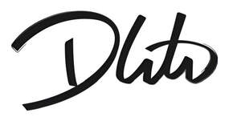

Trade Mark Journal No.2025/048 28 November 2025
UK00004297352 19 November 2025 (14,16,18,21,25,28,35)

- Class 14
- Jewellery; Necklaces [jewellery]; Brooches [jewellery]; Pendants [jewellery]; Bracelets [jewellery]; Keyrings; Lanyards for keys; Retractable key rings [trinkets or fobs].
- Class 16
- Printed matter; Printed paper signs; Printed promotional material; Printed booklets; Printed books; Printed photographs; Printed pamphlets; Printed forms; Printed publications; Printed cards.
- Class 18
- Bags; Tote bags; Luggage bags; Duffle bags; Carry-on bags; Bags for clothes; Drawstring bags; Carry-all bags; Carrying bags; Grocery tote bags; Cross-body bags; Bags for umbrellas; Luggage, bags, wallets and other carriers; Garment bags; Shoulder bags; Waterproof bags; Makeup bags; Flight bags; Traveling bags; Beach bags.
- Class 21
- Drinkware; Beverage glassware; Beverageware; Mugs; Glassware; Coasters (tableware); Glass mugs; Tableware; Ceramic mugs; Cups and mugs; Beer mugs; Glasses, drinking vessels and barware; Mugs of porcelain; Insulated mugs; China mugs; Tumblers for use as drinking glasses; Beverage stirrers; Travel mugs; Coffee mugs; Beverage coolers [containers]; Glass carafes; Tumblers; Mugs made of plastic; Beer steins; Glass bottles; Pint glasses.
- Class 25
- Clothing; Knitwear [clothing]; Jackets [clothing]; Ready-to-wear clothing; Garments for protecting clothing; Linen clothing; Headbands [clothing]; Gloves [clothing]; Clothes; Aprons [clothing]; Maternity clothing; Jerseys [clothing]; Denims [clothing]; Shorts [clothing]; Leather clothing; Silk clothing; Parts of clothing, footwear and headgear; Knitted clothing; Hoods [clothing]; Windproof clothing; Embroidered clothing; Wristbands [clothing]; Belts for clothing; Waterproof clothing; Casual clothing; Rainproof clothing; Jackets being sports clothing; Playsuits [clothing]; Bottoms [clothing]; Clothing for leisure wear; Infant clothing; Trunks being clothing; Sports clothing; Athletic clothing; Leisure clothing; Clothing for children; Clothing for babies; Clothing for infants; Beach clothing; Men's clothing; Face masks [fashion wear] ; Face mask [clothing] ; Head wear; Menswear; Woolen clothing; Sportswear; Jumpers [sweaters]; Beanie hats; Beanies; Hooded pullovers; Sweaters; Caps being headwear; Sweatshirts; Sports caps and hats; Baseball hats; Hoodies; Headwear; Short-sleeved T-shirts; Sun hats; Rain hats; Sleeved jackets; Neck scarves; Visors being headwear; Headbands; Casualwear; Hats; Hooded sweatshirts; Sweatpants; Hooded sweat shirts; Fleece shorts; Long-sleeved shirts; Short-sleeved shirts; Short-sleeve shirts; Fleece pullovers; Fleece jackets; T-shirts; Sleeveless pullovers; Sleeveless jackets; Leggings [trousers]; Sweatshorts; Dress shirts; Shirts; Men's dress socks; Men's and women's jackets, coats, trousers, vests; Pants; Casual shirts; Trousers shorts; Sweat shirts; Fingerless gloves as clothing; Hooded tops; Jogging pants; Vest tops; Fleece tops; Printed t-shirts; Handwarmers [clothing]; Mitts [clothing]; Gloves for apparel; Tracksuit tops; Gym shorts; Polo sweaters; Long sleeve pullovers; Polo shirts; Sports shirts with short sleeves; Windproof jackets; Sport shirts; Shorts; Overshirts; Night shirts; Tee-shirts; Padded jackets.
- Class 28
- Clothing for dolls; Darts; Barrels for darts; Holders for darts; Dart games; Dart shafts; Articles for playing darts; Dart points; Dart mats; Dart wallets; Dart flights; Dart boards; Electronic dart games; Dart board overlays; Containers adapted for holding darts; Dart board cabinets; Containers adapted for holding darts flights; Golf balls.
- Class 35
- Distribution of printed advertising matter; Publication of printed matter for advertising purposes; Electronic publication of printed matter for advertising purposes; Publication of printed matter for advertising purposes in electronic form; Distribution of flyers, brochures, printed matter and samples for advertising purposes; Distribution of promotional matter; Preparation of advertising matter; Promotion of sports competitions and events.
D & M Darts Ltd